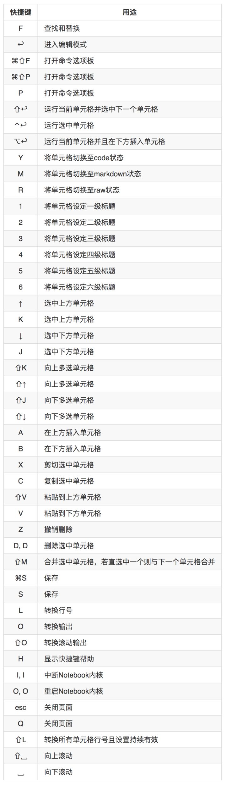

☰ 目录
Mac和Windows特殊按键对照表
命令模式快捷键
编辑模式快捷键
查看和编辑快捷键
Jupyter Notebook快捷键
Mac与Windows特殊按键对照表
Jupyter Notebook笔记本的两种模式
① 命令模式
- 命令模式将键盘命令与Jupyter Notebook笔记本命令相结合，可以通过键盘不同键的组合运行笔记本的命令。
- 按
esc键进入命令模式。 - 命令模式下，单元格边框为灰色，且左侧边框线为蓝色粗线条。
 命令模式
命令模式
② 编辑模式
- 编辑模式使用户可以在单元格内编辑代码或文档。
- 按
enter或return键进入编辑模式。 - 编辑模式下，单元格边框和左侧边框线均为绿色。
 编辑模式
编辑模式
两种模式的快捷键
① 命令模式

② 编辑模式
查看和编辑快捷键
① 查看快捷键
① 进入Jupyter Notebook主界面“File”中。
② 在“New”的下拉列表中选择环境创建一个笔记本。
③ 点击“Help”。
④ 点击“Keyboard Shortcuts”。
② 编辑快捷键
⑴ 方法一
① 进入Jupyter Notebook主界面“File”中。
② 在“New”的下拉列表中选择环境创建一个笔记本。
③ 点击“Help”。
④ 点击“Keyboard Shortcuts”。
⑤ 弹出的对话框中“Command Mode (press Esc to enable)”旁点击“Edit Shortcuts”按钮。
⑵ 方法二
① 进入Jupyter Notebook主界面“File”中。
② 在“New”的下拉列表中选择环境创建一个笔记本。
③ 点击“Help”。
④ 点击“Edit Keyboard Shortcuts”。